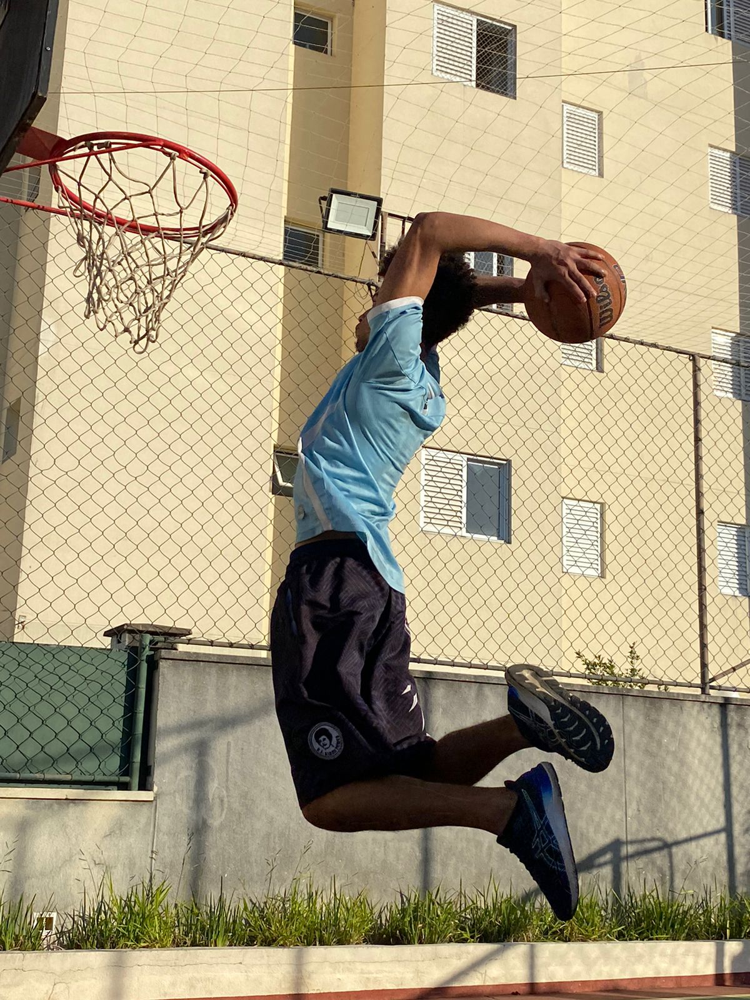
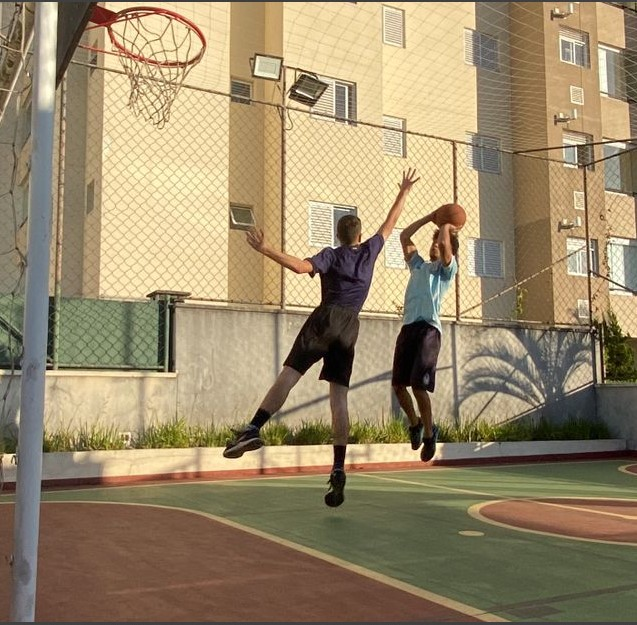
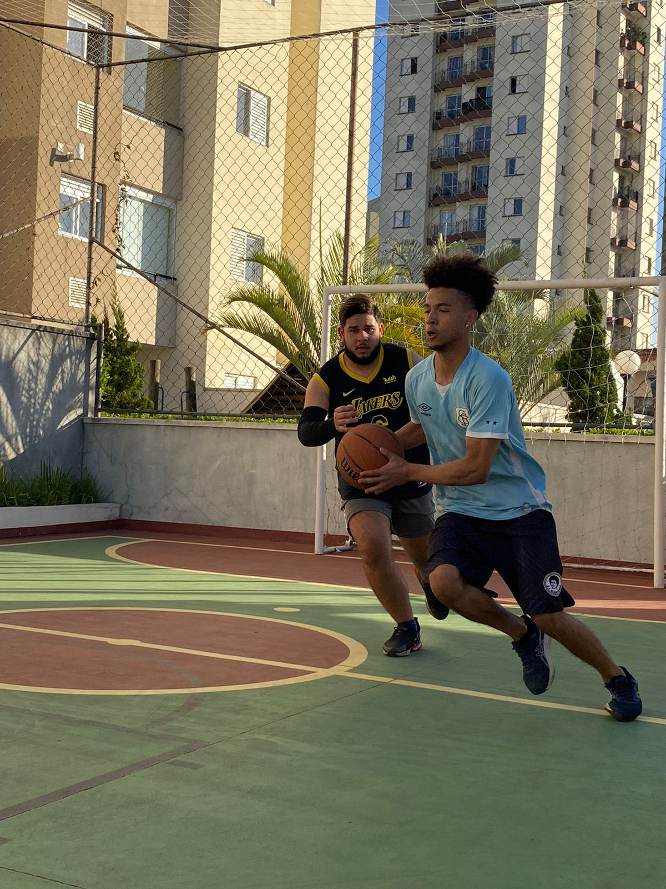
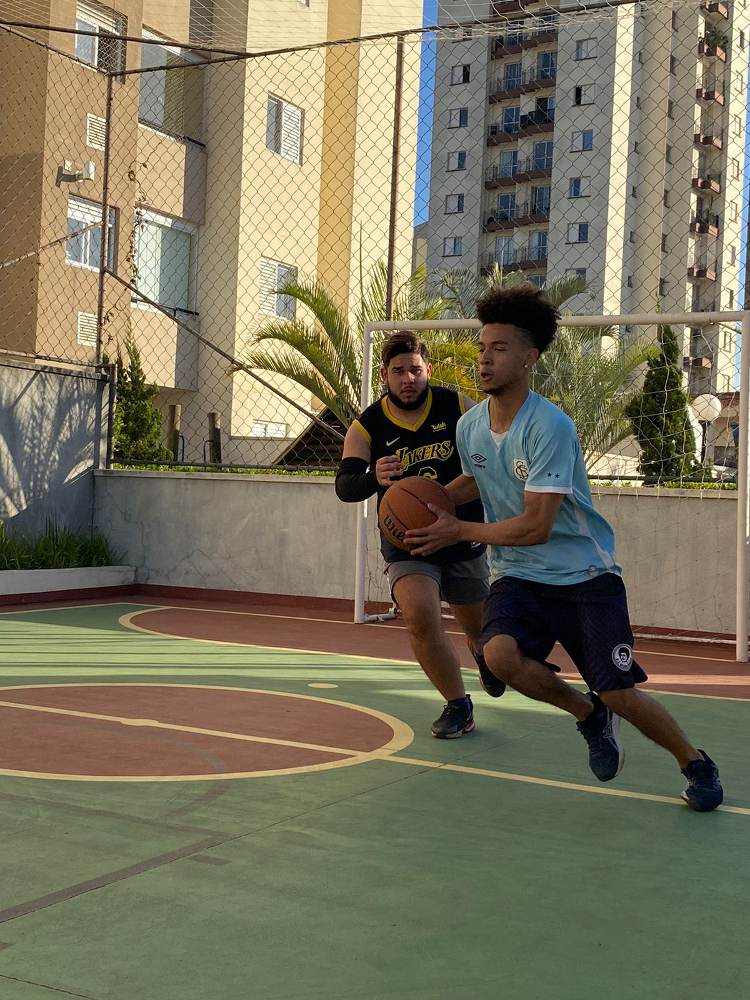

O basquete na minha Vida
O basquete na minha Vida
Bem-vindo à página do autor do ShootLife,uma página dedicada a lhe ajudar a entender o motivo da criação deste site.
Muito prazer, me chamo Marcelo Gonçalves!! Sou o fundador dessa ilustre e bela página de Basquete, aqui você verá não apenas informações e dados, mas também será desafiado sobre a história do esporte.
Por que o basquete foi o ponto chave para esse site?
Bom, sendo um jovem de 19 anos tive diversas fases e momentos em que passei, porém o basquete foi sem dúvidas uma das "fases" que duram até hoje.
Por mêados de 2016, fui incerido no mundo do basquete através da NBA tendo a honra de assistir e apreciar uma virada histórica de uma série de jogos entre Cleveland Cavaliers e Golden State Warriors, onde no jogo 7,o time de Cleveland se consagrou campeão com estrelas como Lebron James, Kyrie Irving e companhia.


A partir dai, passei a me interessar cada vez mais pelo esporte, porém apenas assistindo e adimirando a arte do Basquete. Foi por volta de 2019, epoca em que começei a me "afastar" do futebol, decidi que era o momento para praticar o basquete por diversos fatores, amigos meus começaram a se interessar pelo esporte, o que me fez ficar ainda mais por dentro de tudo que acontecia em relação a ele no brasil e no mundo, além disso minha vontade de jogar apenas aumentava mais e mais a cada jogo, drible e arremesso que eu assistia.
Após 2 anos jogando o esporte, em 2021 percebi o quão desvalorizado ele era no Brasil. Locais onde seriam propicios para jogos de rua eram completamente vandalizados, pelo simples fato de não aceitarem um novo esporte se destacando no Brasil, que para muitos o basquete era insignificante. Porém essa faltade reconhecimento só me fazia querer disceminar o esporte e me divertir com meus amigos, em clubes e fundações ou até mesmo na quadra de um simples prédio.
Sendo Assim, vi a necessidade de demonstrar para as pessoas a notoriedade e beneficios que o basquete merece e tem. Um esporte que me trouxe saúde, momentos felizes e de vez em quando algumas lesões... Mas nada que eu não me recuperasse e voltasse logo em seguida para as quadras.


 Shoot Life
Shoot Life 
